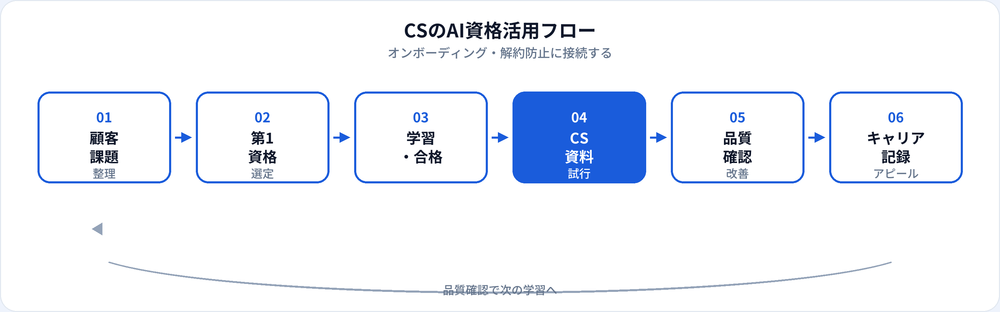

カスタマーサクセス（CS）・カスタマーサポート・アカウント管理は、導入後の定着と更新・拡張が成果指標です。生成AIは、オンボーディング資料、QBR（四半期レビュー）のたたき台、FAQ・活用Tipsの整備を効率化できます。一方、既存顧客の機密情報や誤った機能説明は、解約リスクを高めます。本記事では、CSが取るべきAI資格を比較し、業務別の活用からキャリアまで2026年6月時点で整理します。営業職向け・非エンジニア向けの記事も併せて参照してください。
CSにAI資格が効く理由
CSの評価は「顧客との関係」だけでなく、再現性のあるオンボーディングとデータに基づく解約防止でも測られます。資格学習は、生成AIを資料の下書きエンジンとして使いつつ、顧客情報の保護と最終説明責任を人間が担う——という型を身につける助けになります。
オンボーディングの標準化
導入チェックリスト・キックオフ資料・活用Tipsのたたき台を速く作り、1対1の伴走に時間を割ける。
解約防止のスピード
QBR骨子・リスク顧客向け提案文案・ヘルススコア低下時のアクション案を整理。最終判断はCS担当が行う。
SaaS/AIプロダクトの説明力
AI機能付きプロダクトのCSでは、機能の限界と正しい期待値設定が重要。G検定はここを補強する。
試験対策はこちら
CSの種類と資格の効き方
| CSの種類 | AI資格の主な役割 | 第1候補の目安 |
|---|---|---|
| オンボーディングCS | 導入計画・キックオフ資料・初期活用ガイド | 生成AIパスポート |
| アカウント管理（AM） | QBR文案、更新提案、エグゼクティブサマリー | 生成AIパスポート |
| テクニカルCS / CSM | 活用Tips、トラブルシュートFAQ、設定手順書 | 生成AIパスポート → ITパスポート（任意） |
| カスタマーサポート（問合せ） | 一次回答案、ナレッジベース更新、エスカレーション整理 | 生成AIパスポート（個人情報管理を重点） |
| CS Ops / データドリブンCS | ヘルススコア解釈、解約予兆の説明文案 | 生成AIパスポート → DS検定（任意） |
業務別：生成AIの活用シーン
| 業務 | 生成AIの使い方（例） | 資格で学ぶ関連知識 |
|---|---|---|
| オンボーディング | 30/60/90日計画、チェックリスト、歓迎メール文案 | プロンプト設計、Human-in-the-Loop |
| QBR・定例レビュー | アジェンダ、成果サマリー文案、次四半期の提案骨子 | 数値はCRM/BIから人が転記・確認 |
| 解約防止（Save） | リスク要因の整理、改善提案のたたき台、フォローメール | 顧客固有情報の入力禁止 |
| プロダクト活用支援 | ユースケース別Tips、FAQ、ハウツー記事の骨子 | ハルシネーション対策、公式ドキュメントとの突合 |
| 社内引き継ぎ | アカウント概要、課題履歴、次アクションの整理 | 機密情報のマスキング |
| 更新・拡張提案 | ROI説明文案、機能追加の提案骨子 | 誇大表現の回避、事実確認 |
おすすめ資格の比較
| 資格 | CSとの相性 | 学習時間目安 | 向いているCS |
|---|---|---|---|
| 生成AIパスポート | ◎ オンボーディング・QBR・FAQに直結 | 20〜40時間 | オンボーディング、AM、サポート全般 |
| G検定 | ○ AI/SaaSプロダクトの説明・限界理解 | 80〜150時間 | AI機能付きSaaS、テクニカルCSM |
| DS検定（リテラシー） | ○ ヘルススコア・解約分析の読み方 | 40〜80時間 | CS Ops、データドリブンCS |
| ITパスポート | △ セキュリティ・SaaS基礎 | 40〜80時間 | テクニカルCS、情シス連携が多いCS |
第1候補と学習順
-
第1：生成AIパスポート
オンボーディング・QBR・FAQのたたき台づくりにすぐ効く。合格後、担当アカウント1社分のキックオフ資料に試験導入する。
-
第2（任意）：G検定
AI/SaaSプロダクトの機能説明・期待値調整・プロダクトフィードバック整理を深めたいテクニカルCSM向け。
-
第2〜3（任意）：DS検定リテラシー
ヘルススコア・解約予兆・利用度分析を担うCS Ops向け。
| あなたのCS業務 | 第1候補 |
|---|---|
| オンボーディング・定例MTGが中心 | 生成AIパスポート |
| AI/SaaSプロダクトの活用支援 | 生成AIパスポート → G検定 |
| 解約分析・ヘルススコア運用 | 生成AIパスポート → DS検定 |
| 問合せ対応・ナレッジ整備が中心 | 生成AIパスポート（個人情報管理を重点） |
CSの活用フロー

CSでは下書き→顧客情報の確認→社内レビュー→顧客提示→フィードバックの流れが基本です。AIは下書きまでを速くし、正確性・機密管理・関係構築は人間が担います。
合格後の実践（オンボーディング・QBR・FAQ）
オンボーディングテンプレート
「導入目標・30/60/90日・成功指標・リスク」の固定プロンプト。顧客固有情報はCRMから人が転記。
QBR骨子ジェネレータ
「今期成果・課題・次期提案・Ask」の4部構成。数値・事例はファクトチェック必須。
FAQ・ナレッジ更新
問合せログからFAQ候補を抽出→担当者が回答を確定→ヘルプセンターに反映。AIは候補出しまで。
CSの評価はNRR（ネットレベニューリテンション）・解約率・CSAT・Time-to-Valueなどに結びつきます。AIで短縮した時間を、リスク顧客への伴走とプロダクト改善提案に再投資することが効果的です。
CS現場の注意点
| やってよいこと | 避けるべきこと |
|---|---|
| 匿名化したオンボーディング・QBR文案 | 顧客名・契約・利用ログの入力 |
| 公式ドキュメントに基づくFAQ下書き | 未確認の機能説明をそのまま顧客に送付 |
| 解約リスク要因のカテゴリ整理 | 解約判断をAIだけで下す |
| 社内承認フローを通したテンプレ運用 | 私的AIアカウントへの機密データ投入 |
生成AIパスポート第4章（個人情報・著作権・倫理）は、CSが顧客データの取り扱いを説明できるレベルまで整理するのに向いています（学習ガイド）。
キャリア・転職でのアピール
現職（CSのまま）
「生成AIパスポート（年月）」と、オンボーディング期間短縮「QBR資料標準化」「解約率○%改善（チーム貢献）」などをセットで記載。社内ナレッジ整備やCS Ops改善への参画もアピール材料になります。
転職・キャリアチェンジ
- プリセールス・セールスエンジニア 顧客課題理解 ＋ 生成AIパスポート ＋ 更新・拡張実績
- AIプロダクトマネージャー 顧客の声整理 ＋ 生成AIパスポート ＋ G検定（任意）（詳細）
- プロンプトエンジニア（業務寄り） CS向けプロンプト設計 ＋ 生成AIパスポート（詳細）
- CS Ops / RevOps ヘルススコア運用 ＋ DS検定（任意）＋ 分析ダッシュボード実績
資格の一般的な活かし方はAI資格はキャリアにどう役立つ？、履歴書は記載例ガイドを参照。
資格だけでは足りない点
CSの評価は顧客関係・プロダクト理解・解約防止の実行力です。資格はリテラシーの証明になりますが、信頼構築・危機対応・組織調整は現場経験で培う領域です。合格後は、リスクの低いFAQ・オンボーディング資料から小さく試し、顧客向け送付前の確認フローを必ず残してください。
よくある質問
カスタマーサクセスにおすすめのAI資格はどれ？
オンボーディング・QBR・FAQが主なら生成AIパスポート。AI/SaaSプロダクトならG検定、データ分析CSならDS検定も検討。
顧客データをAIに入力してよい？
社内規定を確認。顧客名・契約・利用ログは原則入力しない。文案・構成案に限定し、人が最終確認する。
CSと営業でAIの使い方は違う？
営業は新規獲得・提案が中心、CSは定着・更新・解約防止が中心。資格の第一候補は同じく生成AIパスポートですが、CSでは既存顧客情報の管理がより重要です。
CSからAI PM・プリセールスに転職できる？
可能です。顧客課題の深掘り経験は強み。資格に加えNRR改善などの定量実績があると説得力が増します。